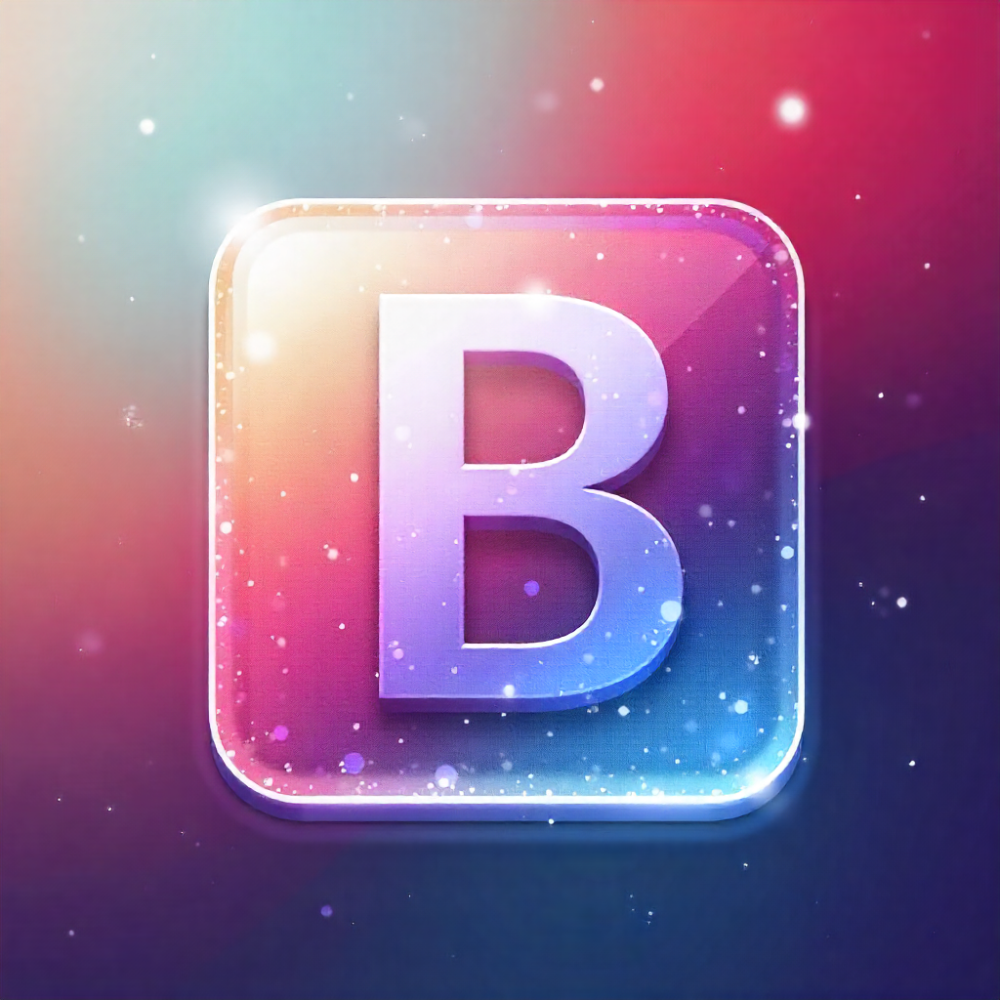

Compétences – Développement
 HTML5
HTML5
 CSS3
CSS3
 JavaScript
JavaScript
 Python
Python
PHP
.png) Angular
Angular
 Kotlin
Kotlin

Bootstrap
 SQL
SQL
Bonjour je suis
Apprentie Developpeur web
Je m’appelle Josue Kialengela-Tazi, étudiant en 2ᵉ année de BTS SIO, option SLAM (Solutions Logicielles et Applications Métiers).
Passionné par le développement web et mobile, j’aime concevoir des sites et applications intuitives, performantes et adaptées aux besoins réels des utilisateurs.
Je maîtrise plusieurs langages de programmation, dont HTML, CSS, JavaScript, PHP, Python, Kotlin, SQL . Je suis quelqu'un de curieux, rigoureux et déterminé, je suis toujours motivé à relever de nouveaux défis techniques et à apprendre de nouvelles technologies.
Actuellement, je suis à la recherche d’une alternance en Bac+3, dans le développement web ou en UX/UI design, avec comme préférence pour le front-end.
Je prévois de poursuivre mes études en troisième année en alternance dans le développement web en full stack ou front-end. Je suis donc également en recherche active d’une entreprise pour m’accompagner dans cette alternance à partir de la rentrée prochaine.
HTML5
CSS3
JavaScript
Python
Angular
Kotlin
SQL
 GitHub
GitHub
 VS Code
VS Code
 IntelliJ IDEA
IntelliJ IDEA
 MariaDB
MariaDB
 Figma
Figma
 WordPress
WordPress
 Trello
Trello
 PrestaShop
PrestaShop
 Shopify
Shopify
Ouéso Agency, Noisy-le-Grand (93), Île-de-France
Barber Norvegien 007, Aubervilliers (93), Île-de-France
Fanprix, Paris, Île-de-France

J’ai créé ce portfolio statique dans le cadre de ma formation en BTS SIO. Il est basé sur Pelican, un générateur de sites statiques, et utilise Bootstrap 5 pour la mise en page. Ce projet me permet de présenter mes compétences, mes projets et mes expériences de manière professionnelle.

J'ai conçu une barre de recherche connectée à Google et Youtube afin d'offrir une navigation rapide et intuitive vers les résultats web directement depuis l'interface du site.
Application web permettant de rechercher des films, de consulter les films populaires et par genre, et de découvrir des artistes célèbres. Le projet utilise l’API TMDb pour récupérer les données en temps réel et propose une interface responsive avec affiches, titres, notes et descriptions.

Application web permettant de rechercher des chansons ou artistes, avec des vidéos YouTube intégrées. Le projet offre une interface responsive et intuitive pour découvrir et écouter de la musique .

Kotlin Monsters est un jeu d’aventure en Kotlin, inspiré de Pokémon. Le joueur incarne un dresseur chargé de capturer des monstres, combattre, les faire évoluer et collectionner des badges en explorant différentes zones.

Création d’une base de données complète sur les parcs et montagnes russes d’Europe (UML, SQL, MariaDB).